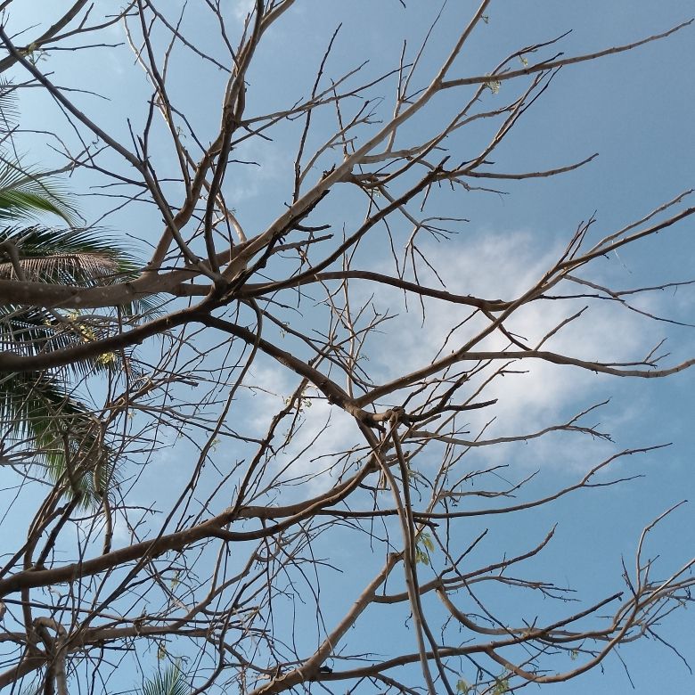
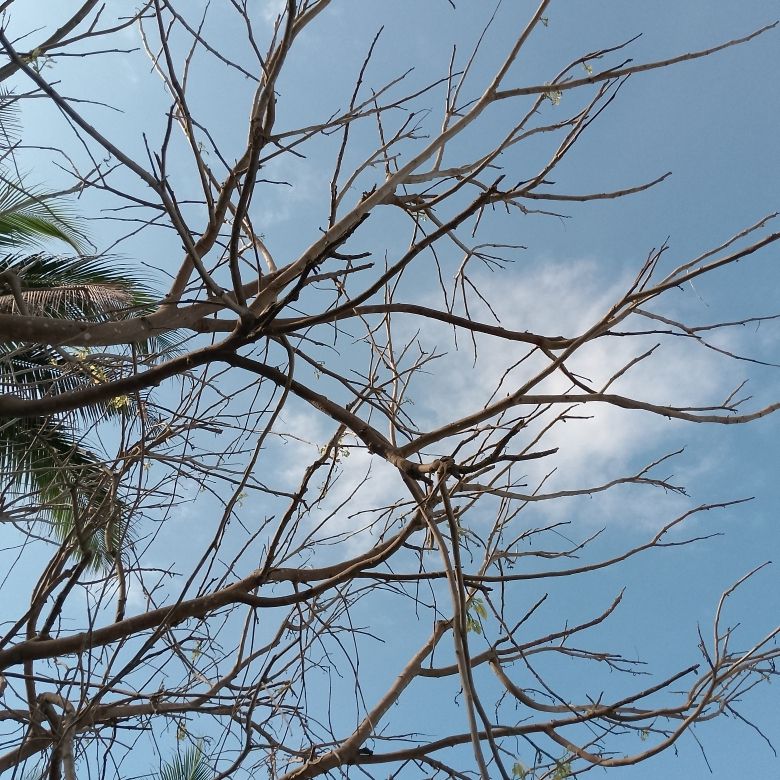
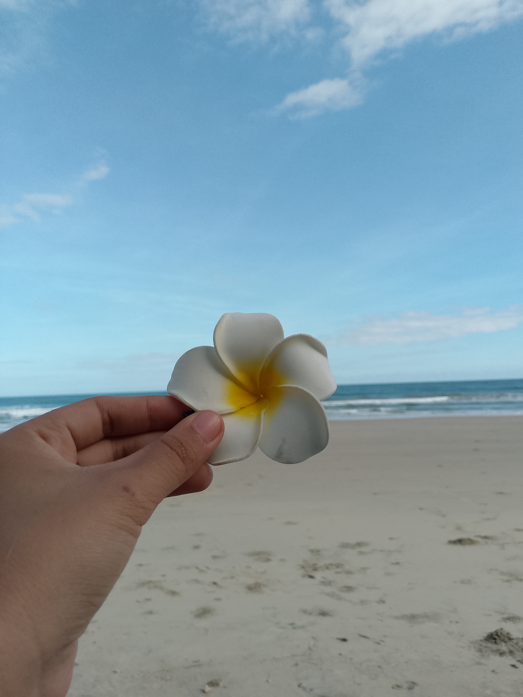
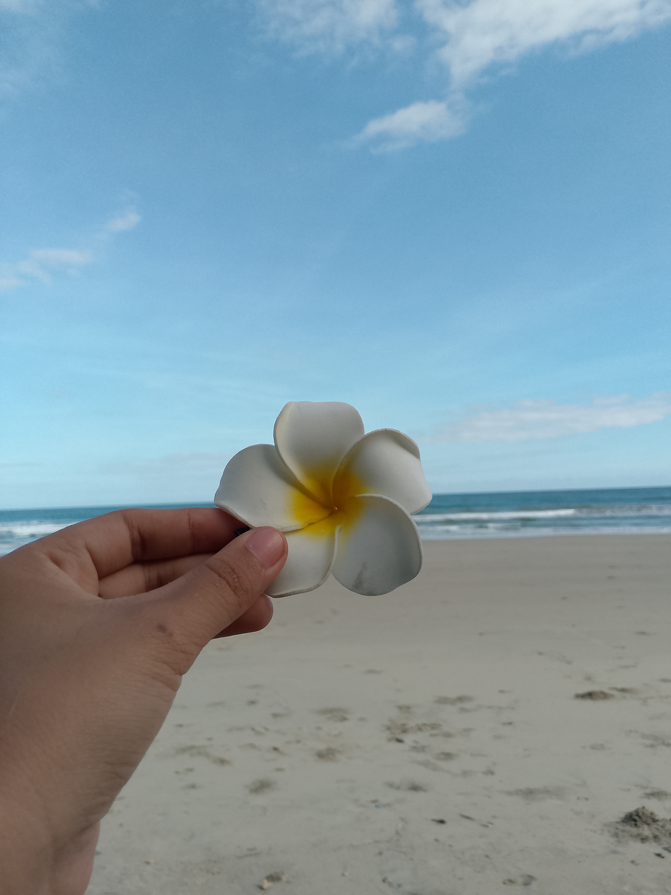

 

I'm a first-year BSCS student learning about coding and web development. Coding isn't really my passion, but I'm trying my best to learn it. I've always loved photography and expressing myself through pictures. Still, I chose this course to be practical and secure a better future.
I'm learning the basics of HTML, and CSS. Itt's challenging and draining, but I stay open to learning. I believe I can still grow in this field with effort and time. Even if it's not my passion, I'm committed to making the most of it.
Hobbies
- Reading books
- Watching movies
- Photography
- Journaling
My Favorite Things
Some of my favorite things include reading manga, taking photos during golden hour, listening to soft music when i need to relax. In my free time, I like scroling through pinterest for creative ideas and inspiration. These things make me happy and help me unwind after a long day.
Goals
My goal is to finish my studies and build a stable career. I hope to work abroad someday and become independent. I want to support myself and make my family proud.